Panduan lengkap operasional harian, alur rantai pasok FIFO, konfigurasi Master Item & Multi-Satuan, input transaksi backdate migrasi data, otomatisasi margin restock, panel developer, serta Desain Antarmuka Modern Invo. SaaS (Window Wrapper, Pill Navigation, & Executive 3-Row Dashboard).
| Versi | Tipe Penanda | Ringkasan Perubahan |
|---|---|---|
| v1.6.0 (Current) |
[TAMBAH v1.6] |
• Dual-Mode Stok (Physical Allocation vs Floating Pool): Pilihan manajemen stok fleksibel. Mode Floating Pool untuk stok bebas otomatis (ideal untuk komoditas curah/telur), dan Physical Allocation (Repackage) untuk mengunci kuota kemasan fisik siap jual (Box, Lusin, PCS promo, atau paket sembako mendekati expired) dengan proteksi anti over-allocation & tombol reset bebas. • Composite Bundling / Hampers Buah (Model B - On-Demand JIT): Pembuatan paket parcel multi-item dari resep (Bill of Materials) dengan kalkulasi HPP gabungan dan estimasi kapasitas produksi otomatis berbasis bahan paling sedikit (bottleneck) tanpa merusak FIFO. |
| [UBAH v1.6] | • Perbaikan Label Satuan Dinamis: Memperbaiki teks satuan pada katalog produk dan kartu kasir POS sehingga menampilkan nama satuan sebenarnya (Lusin, Box, Paket) secara akurat, bukan lagi tertulis 'pcs'. | |
| v1.5.0 | [TAMBAH v1.5] |
• Invo. Modern SaaS UI Theme: Peremajaan visual antarmuka sistem secara komprehensif mengadopsi Invo Design System: Desktop window wrapper beraksen Mac 3-dots, logo kubus 3D geometris, navigasi kapsul pil menyala, dan header modern. • 3-Row Executive Dashboard: Baris 1: 4 Stat cards pastel (Total Revenue, Invoices, Clients, Loyalty) ber-badge tren; Baris 2: Grafik batang pendapatan bulanan (interaktif rounded bars & dark active tooltip) + Kartu promosi royal blue; Baris 3: Aktivitas terkini & tabel nota invoice bersih. |
| [UBAH v1.5] |
• Peremajaan Halaman Login & Sub-Modul: Redesain formulir login beraksen Invo serta harmonisasi seluruh sub-halaman (POS Kasir, Produk, Pembelian, Laporan, Developer) ke palet Electric Blue (#1a62ff).
|
|
| v1.4.0 | [TAMBAH v1.4] |
• Role Khusus Developer & 1 Menu Tunggal: Akun dengan peran Developer hanya melihat 1 menu saja (Developer Maintenance) dan diisolasi dari menu operasional toko. • Formulir Pembersihan Data Terfilter: Menyediakan opsi Wipe All Data atau seleksi form/modul (Transaksi POS, Pembelian, Biaya, Produk, Item, Supplier) dalam rentang tanggal tertentu. • Safety Protection: Konfirmasi ketik kata DELETE dan proteksi foreign key terbalik untuk menjaga keutuhan akun pengguna & sistem.
|
| [UBAH v1.4] |
• Ekspansi RBAC & Skema Pengguna: Kolom role pada tabel users diperbarui dengan migration 002 untuk menyertakan role developer.
|
|
| v1.3.0 | [TAMBAH v1.3] | • Otomatisasi Harga Jual Berbasis Margin saat Restock: Pembelian perdana/berikutnya otomatis men-generate harga jual varian % margin tanpa distorsi riwayat penjualan lampau (frozen snapshot). |
| [UBAH v1.3] | • Notifikasi Toast Informatif: Modal pembelian memberi rincian nama varian dan harga jual baru. | |
| v1.2.0 | [TAMBAH v1.2] | Input tanggal backdate POS, reset baris varian setup produk, normalisasi boundary tanggal laporan. |
| v1.1.0 | [TAMBAH v1.1] | Master Items & Multi-Satuan eceran, form single-setup. |
cd D:\POSnpm start (Akses: http://localhost:3000)| Peran (Role) | Email Login | Password | Cakupan Akses |
|---|---|---|---|
| Owner | admin@pos.com | admin123 | Akses Penuh Seluruh Modul Toko |
| Developer 🟢 [v1.4] | developer@pos.com | developer123 | Hanya 1 Menu: Panel Maintenance & Reset Data Terfilter |
| Kasir | Dibuat oleh Owner | - | POS Kasir & Transaksi Backdate |
| Reseller | Dibuat oleh Owner | - | POS Penjualan (Katalog Eceran) |
Buka browser, akses http://localhost:3000. Tampilan login kini hadir dengan branding Invo. dengan gaya SaaS modern, kartu putih berujung lengkung, dan tombol aksi Electric Blue. Masukkan email dan password terdaftar, lalu klik Masuk ke Sistem.
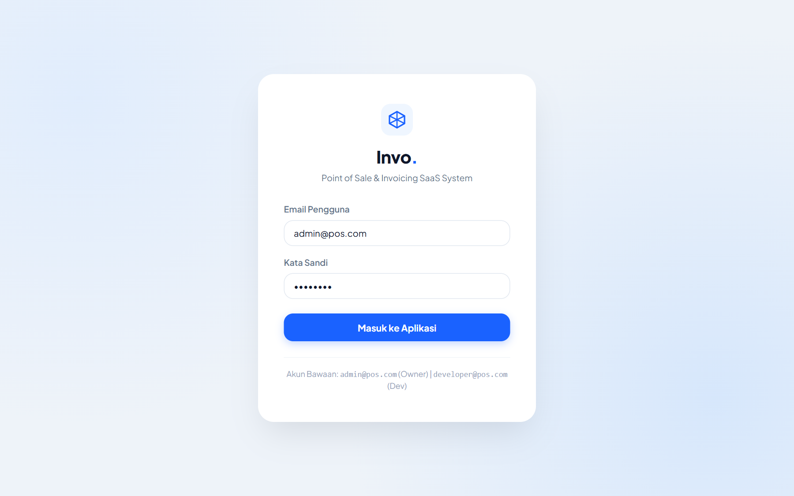
📷 Gambar 2.1: Tampilan Formulir Login Sistem Invo. POS Modern SaaS
Dashboard utama terbungkus dalam bingkai Desktop Window modern beraksen 3 tombol kontrol macOS (🔴 🟡 🟢). Setiap elemen dirancang clean, responsif, dan ergonomis untuk efisiensi operasional.
| Komponen | Posisi | Deskripsi & Fungsi |
|---|---|---|
| Logo & Branding Invo. | Kiri Atas Sidebar | Logo kubus isometrik 3D gradasi biru dengan teks tebal Invo. sebagai identitas visual sistem. |
| Navigasi Kapsul Pil | Sidebar Kiri | Menu aktif disorot dengan kapsul pil biru elektrik menyala (*Electric Blue `#1a62ff` glow*), dengan seluruh teks label menu tetap dalam bahasa Indonesia orisinal (Dashboard, POS Kasir, Stok Barang, Riwayat Transaksi, Pembelian, Produk & Satuan, Supplier, Pengeluaran, Laporan, User Management, Pengaturan, Developer Maintenance) dan 100% beroperasi normal. |
| Top Header Bar | Atas Konten | Dilengkapi kotak pencarian instan (Tap to search), lonceng notifikasi dengan lencana unread 2, dan avatar profil pengguna beserta penanda peran. |
| Row 1: 4 Stat Cards | Atas Dashboard | Menampilkan 4 metrik performa utama berikon pastel: Total Revenue (oranye), Invoices (hijau), Clients (biru), dan Loyalty (pink) lengkap dengan pill persentase tren naik/turun. |
| Row 2: Grafik & Promo | Tengah Dashboard | Grafik Batang Vertikal Bulanan: Menampilkan tren omzet bulanan dengan rounded bars dan tooltip melayang hitam untuk bulan aktif. Invo Promo Card: Kartu aksi bergradasi royal blue dengan lencana NEW dan tombol jalan pintas cepat ke POS Kasir. |
| Row 3: Aktivitas & Tabel | Bawah Dashboard | Recent Activities: Log aktivitas sistem terkini lengkap dengan avatar dan badge kategori. Recent Invoices: Tabel invoice rapi dengan status badge warna (PAID, PENDING, OVERDUE). |
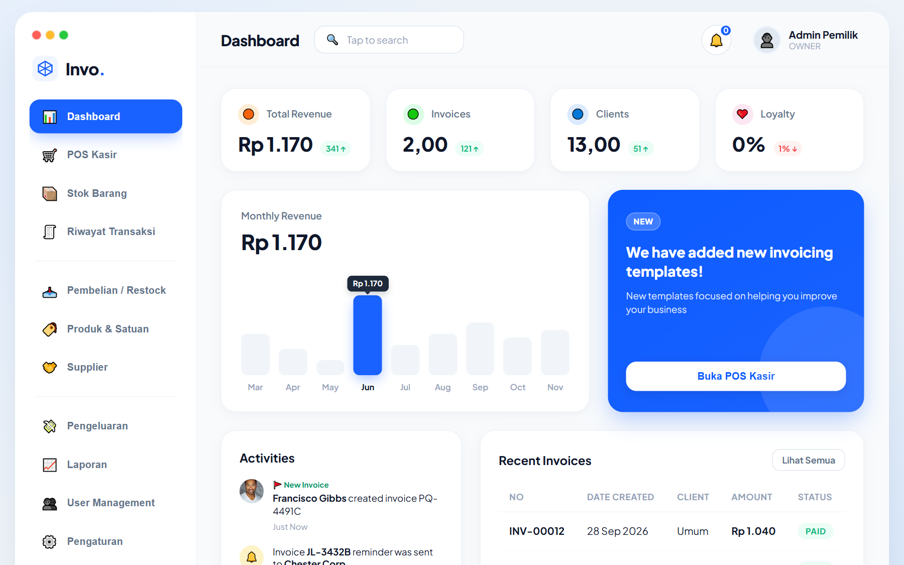
📷 Gambar 2.2: Tampilan Dashboard Eksekutif Invo. (Stat Cards, Grafik Batang Pendapatan, Promo Banner, & Invoices)
OWNER ONLY Menu: Sidebar → 🤝 Supplier → klik ➕ Tambah Supplier
| Field | Contoh | Penjelasan |
|---|---|---|
| Nama Supplier * | Toko Kain Makmur | Nama perusahaan/toko pemasok barang. |
| Telepon | 08123456789 | Nomor kontak pemesanan ulang. |
| Alamat | Jl. Tekstil No. 1, Bandung | Alamat gudang/kantor supplier. |
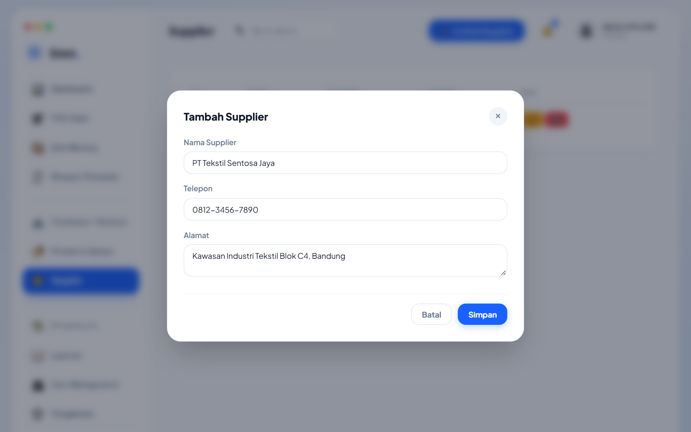
📷 Gambar 4.1: Formulir Modal Tambah Data Mitra Supplier Baru
OWNER ONLY Menu: Sidebar → 🚚 Pembelian / Restock → klik ➕ Pembelian Baru
% Margin Profit pada saat barang baru dibuat (di mana HPP awal masih Rp 0 sehingga harga jual awal Rp 0), Anda tidak perlu lagi mengedit harga secara manual setelah membeli barang! Setiap kali pembelian dicatat, sistem seketika menghitung HPP modal rata-rata tertimbang batch yang ada di gudang dan otomatis men-generate harga jualnya.PCS) dan satuan jual "Kacamata Hitam" dengan Margin 50%. Awalnya harga jual tertera Rp 0 karena belum pernah kulakan.| Field Form | Contoh | Penjelasan Detail |
|---|---|---|
| Supplier * | Toko Kain Makmur | Pilih pemasok barang dari dropdown. |
| Tanggal Pembelian * | 2026-09-27 | Tanggal barang diterima (menentukan urutan pemotongan FIFO). Bisa diisi tanggal lampau untuk migrasi data! |
| Nama Barang * | XXX atau Kacamata | Nama barang master. Terdapat saran otomatis dari barang master terdaftar. |
| Jumlah Satuan Beli * | 1 (Kodi) atau 10 (PCS) | Jumlah satuan grosir atau eceran yang dibeli. |
| Harga Beli per Satuan * | 1200000 | Harga per Kodi/Roll/PCS (misal: Rp 1.200.000). |
| Konversi ke Satuan Dasar * | 60 (jika Kodi/Meter) atau 1 (jika PCS) | Berapa satuan dasar dalam 1 satuan beli (misal: 60 meter per kodi, atau 1 untuk pcs). |
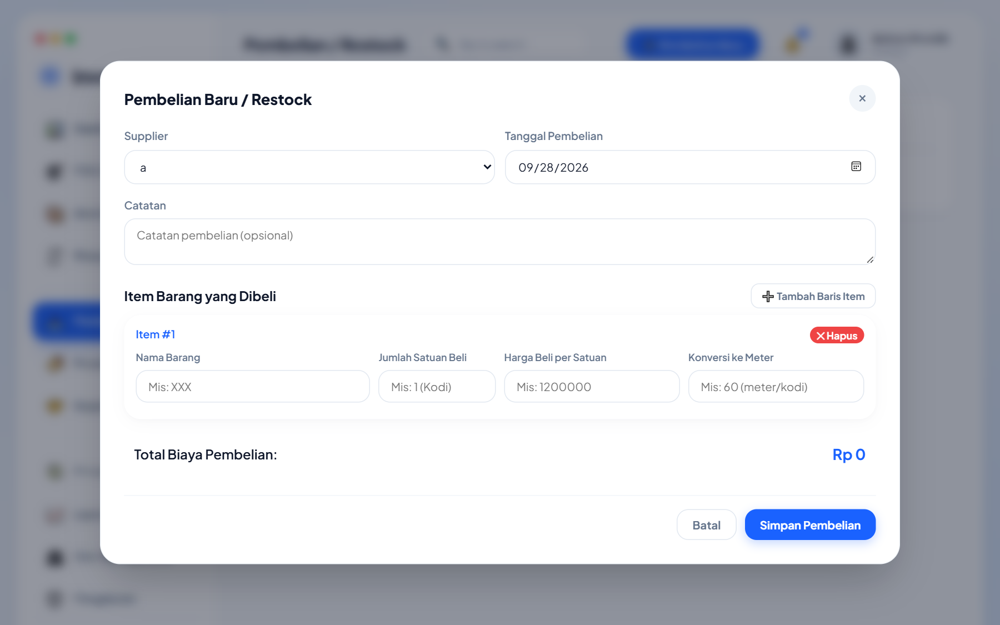
📷 Gambar 5.1: Formulir Modal Pembelian Restock (Konversi Grosir ke Satuan Dasar FIFO & Auto Margin Sync)
OWNER ONLY Menu: Sidebar → 🎯 Produk & Satuan → klik ➕ Setup Produk & Multi-Satuan
% Margin Profit pada barang yang belum ada riwayat pembelian, harga jual awal akan bernilai Rp 0 — Anda tidak perlu ragu, karena begitu pembelian dicatat di Langkah 2, harga jual akan otomatis aktif terhitung.
"Tentukan ukuran pecahan eceran anda (misal: satuan jual 1 Sprei M butuh 2.0 Satuan Dasar Perhitungan Stok (sebagai contoh : meter) dan Sprei L butuh 2.5 Satuan Dasar Perhitungan Stok (sebagai contoh : meter). Sistem akan menghitung HPP otomatis berdasarkan harga modal per meter di gudang."
| Satuan Jual | Kebutuhan (Meter) 🟢 [v1.2] | Metode Harga | Nilai / Margin | Kalkulasi HPP | Harga Jual Akhir | Estimasi Profit |
|---|---|---|---|---|---|---|
| Sprei M | 2.0 Meter |
Manual | - | Rp 40.000 | Rp 60.000 | Rp 20.000 (+50%) |
| Sprei L | 2.5 Meter |
% Margin Profit | 40% |
Rp 50.000 | Rp 70.000 | Rp 20.000 (+40%) |
| Sprei XL | 3.0 Meter |
% Margin Profit | 50% |
Rp 60.000 | Rp 90.000 | Rp 30.000 (+50%) |
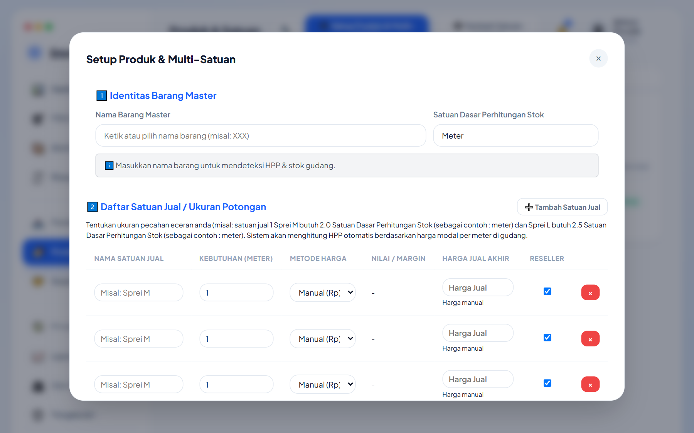
📷 Gambar 6.1: Formulir Setup Multi-Satuan Master Item (Varian Sprei M/L/XL dengan Margin & Manual Pricing)
Di kondisi pasar nyata, dinamika persaingan harga dan karakteristik barang menuntut fleksibilitas pengelolaan stok. Sistem menyediakan 2 model pengelolaan stok siap jual:
Cocok untuk barang curah/segar seperti telur, beras, kain meteran, atau buah-buahan.
Cocok untuk barang yang sudah dibungkus fisik di rak toko, paket sembako, atau barang yang mendekati expired.
| Arah Switching | Kondisi Pasar / Operasional | Aksi di Sistem |
|---|---|---|
| Floating Pool ➔ Physical Allocation |
1. Barang Mendekati Expired: Sarden/tepung yang sisa 2 bulan dipaketkan ke kuota khusus agar cepat habis. 2. Perang Harga Pasar: Mengemas 20 lusin paket hemat diskon untuk mengamankan perputaran modal. 3. Kesiapan Display: Membungkus barang di pagi hari agar jam sibuk tidak terjadi antrean packing. |
Klik tombol 📦 Repackage / Alokasi Stok pada kartu barang, masukkan kuota fisik tiap satuan, lalu klik 💾 Simpan Alokasi Stok. |
| Physical Allocation ➔ Floating Pool |
1. Tren Pasar Berbalik: Peminat grosir/paket sepi sementara pembeli eceran melonjak tinggi. 2. Promo Berakhir: Kemasan sisa promo dibuka kembali menjadi stok bebas. |
Buka modal Repackage dan klik tombol merah 🌊 Reset ke Floating Pool. Stok seketika kembali bebas dikonversi ke semua satuan tanpa mengubah HPP FIFO. |
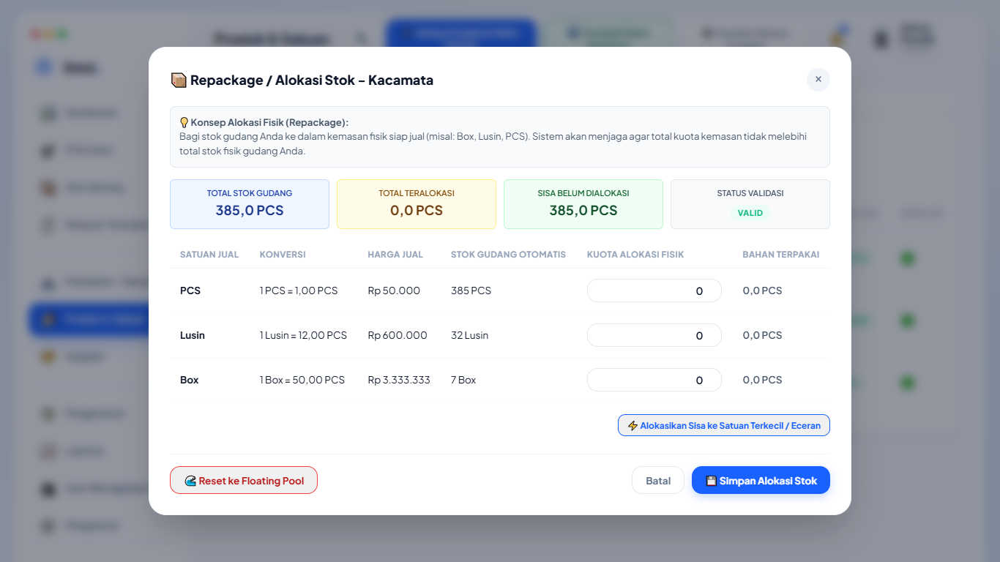
📷 Gambar 6.2: Modal Repackage dengan Live Calculator Bar (Total Gudang, Total Teralokasi, Sisa Bebas) & Validasi Anti Over-Allocation
Untuk paket komposit seperti Hampers Parcel Buah (1.5 kg Mangga + 1.0 kg Apel + 0.5 kg Anggur + 1 Keranjang):
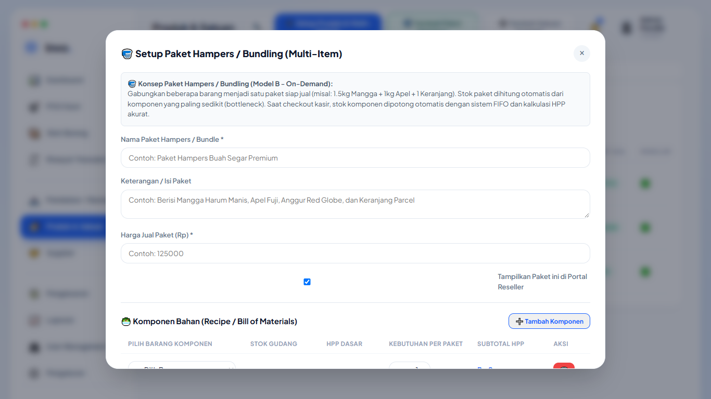
📷 Gambar 6.3: Formulir Setup Paket Hampers / Bundling dengan Deteksi Kapasitas Bottleneck Otomatis
SEMUA ROLE Menu: Sidebar → 🛒 POS Kasir
2 pcs).15 Agustus 2026 14:30).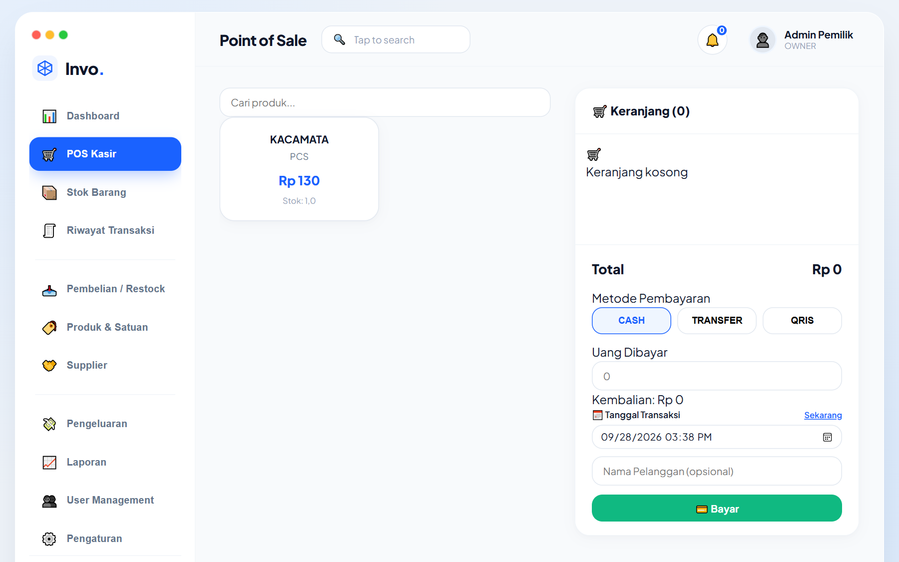
📷 Gambar 7.1: Antarmuka POS Kasir dengan Field Input Tanggal Backdate & Keranjang Belanja
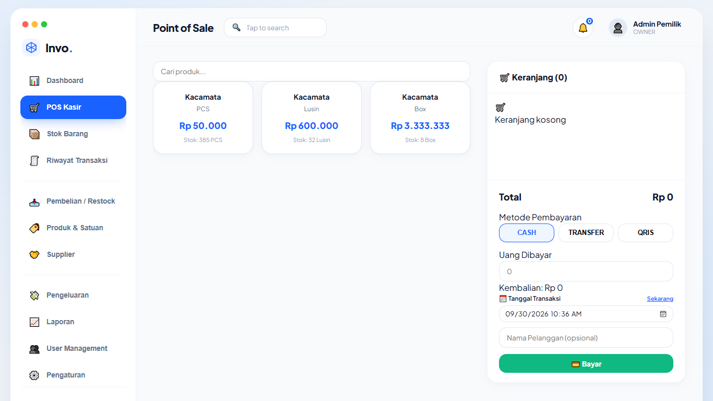
📷 Gambar 7.2: Tampilan Kasir POS dengan Label Satuan Akurat (PCS, Lusin, Box) dan Indikator Badge BUNDLE / ALOKASI
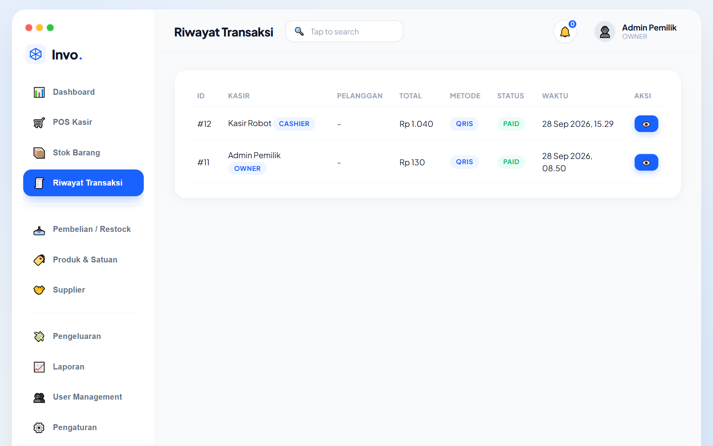
📷 Gambar 7.3: Daftar Riwayat Transaksi Penjualan & Status Pembayaran Kasir
OWNER ONLY Menu: Sidebar → 💰 Pengeluaran
Catat biaya operasional toko seperti sewa, listrik, dan gaji. Tanggal pengeluaran juga mendukung backdate agar sesuai dengan pembukuan bulan terkait.
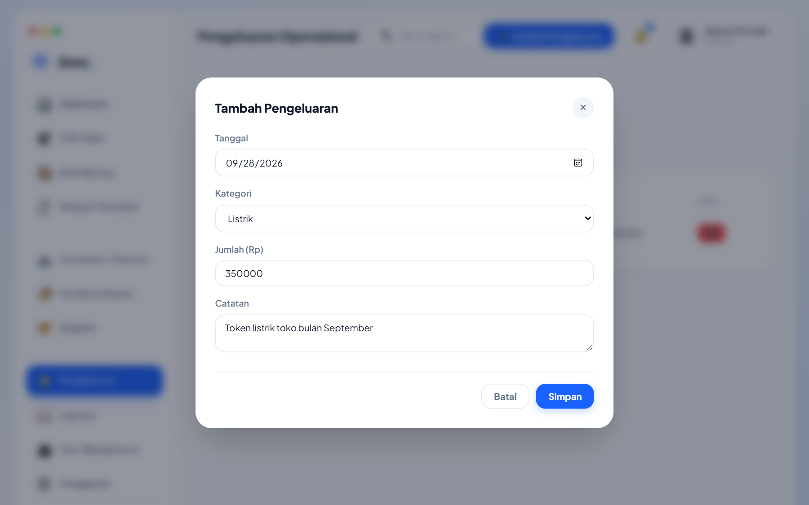
📷 Gambar 8.1: Formulir Modal Pencatatan Biaya Pengeluaran Operasional Toko
OWNER ONLY Menu: Sidebar → 📈 Laporan → Tab 💰 Laba Rugi
| Komponen Laporan | Rumus Perhitungan | Penjelasan |
|---|---|---|
| Total Omzet (Revenue) | Total nilai transaksi lunas | Pendapatan kotor dari penjualan produk. |
| Total HPP (COGS FIFO) | Akumulasi modal bahan dasar yang terpotong | Dihitung otomatis dari batch FIFO tertua. |
| Laba Kotor (Gross Profit) | $\text{Omzet} - \text{Total HPP}$ | Keuntungan sebelum dipotong biaya operasional. |
| Biaya Operasional | Akumulasi pengeluaran operasional toko | Beban listrik, sewa, gaji, perlengkapan. |
| Laba Bersih (Net Profit) | $\text{Laba Kotor} - \text{Biaya Operasional}$ | Keuntungan bersih riil usaha Anda. |
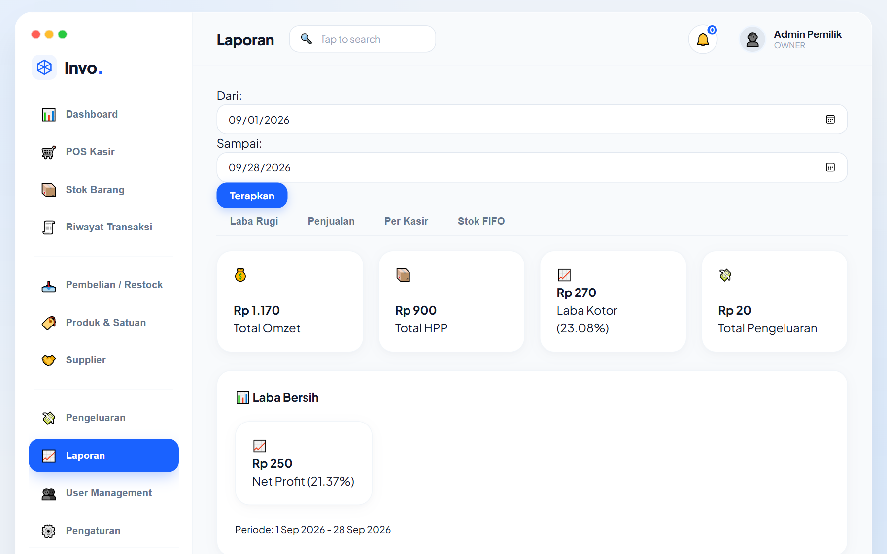
📷 Gambar 8.2: Tampilan Laporan Laba Rugi Otomatis (Gross Profit FIFO & Net Profit Toko)
DEVELOPER ONLY Menu: Sidebar → 🛠️ Developer Maintenance
developer@pos.com / developer123), sidebar hanya menampilkan 1 menu tunggal, yaitu Developer Maintenance. Seluruh menu operasional toko (Kasir, Pembelian, Stok, Laporan, Supplier, Settings) disembunyikan total. Usaha mengakses halaman kasir atau laporan akan otomatis dikembalikan ke panel developer ini.
DELETE pada kotak verifikasi sebelum tombol eksekusi dapat diproses.
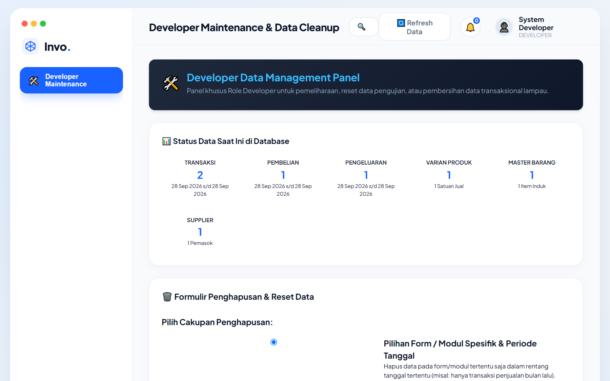
📷 Gambar 9.1: Panel Khusus Role Developer (Statistik Entitas & Formulir Filtered Cleanup Rentang Tanggal)
| Fitur / Modul | Owner | Kasir | Reseller | Developer 🟢 [v1.4] |
|---|---|---|---|---|
| Dashboard Eksekutif | ✅ Lengkap | ✅ Ringkas | ✅ Ringkas | ❌ (Diisolasi) |
| POS Kasir & Transaksi Backdate | ✅ | ✅ | ✅ (Katalog Terfilter) | ❌ |
| Setup Multi-Satuan Produk | ✅ | ❌ | ❌ | ❌ |
| Pembelian Restock Bahan | ✅ | ❌ | ❌ | ❌ |
| Konfirmasi Bayar Transfer/QRIS | ✅ | ❌ | ❌ | ❌ |
| Laporan Keuangan & Laba Rugi | ✅ | ❌ | ❌ | ❌ |
| User Management & Pengaturan | ✅ | ❌ | ❌ | ❌ |
| Panel Maintenance & Reset Data | ❌ | ❌ | ❌ | ✅ (Akses Tunggal Eksklusif) |
A: Tidak. Skema penghapusan mode: all dirancang khusus untuk mengosongkan data transaksi, persediaan, dan katalog produk. Tabel pengguna (users) dan pengaturan sistem (system_settings) tetap utuh sehingga pengguna tetap bisa langsung login kembali.
A: Saat toko baru mulai memakai sistem di pertengahan bulan, pemilik usaha ingin laporan bulanan tetap utuh. Dengan fitur backdate di pembelian dan kasir, data penjualan minggu-minggu sebelumnya bisa diinput ke sistem dengan tanggal aslinya, sehingga laporan keuangan di akhir bulan mencerminkan performa nyata.